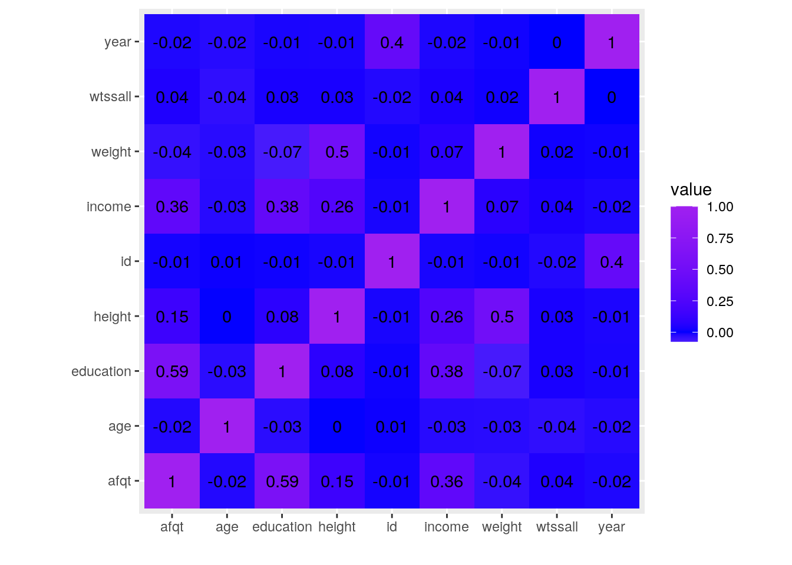
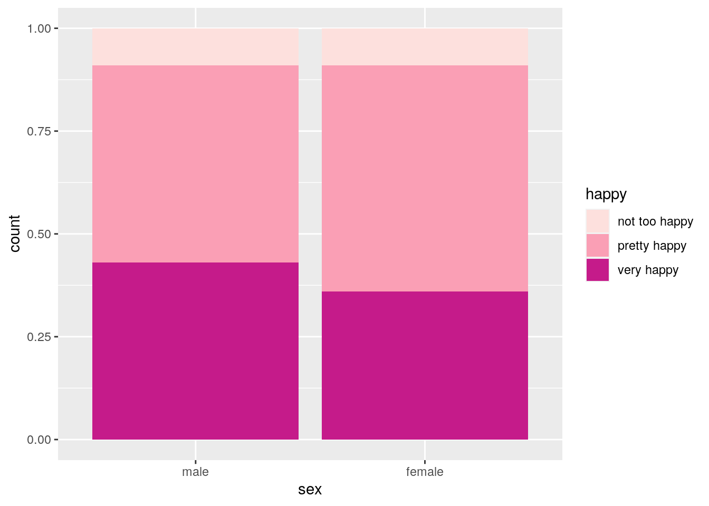
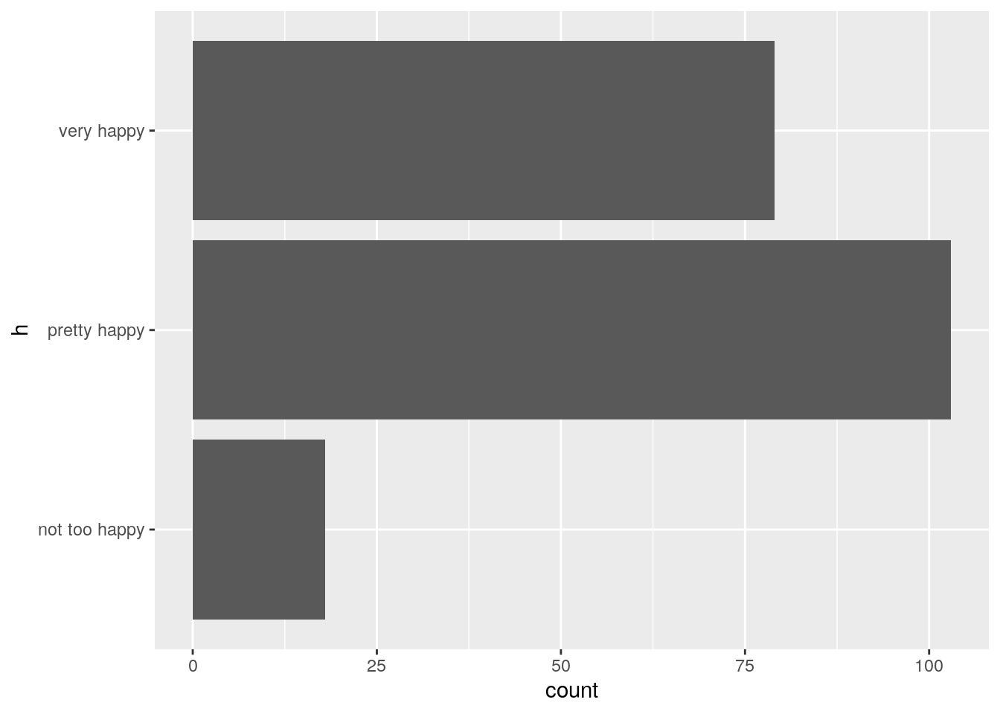
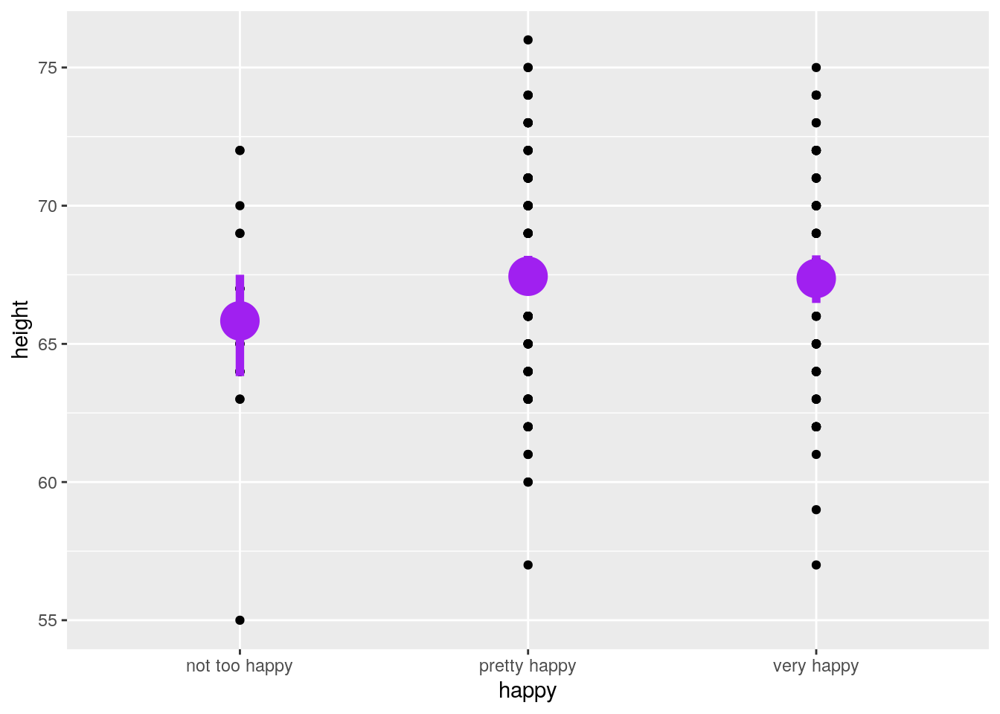
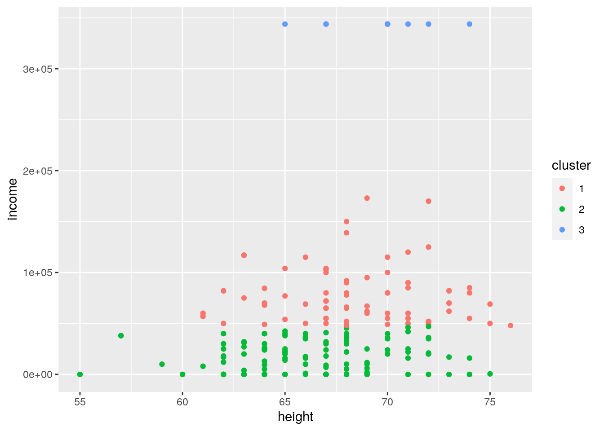
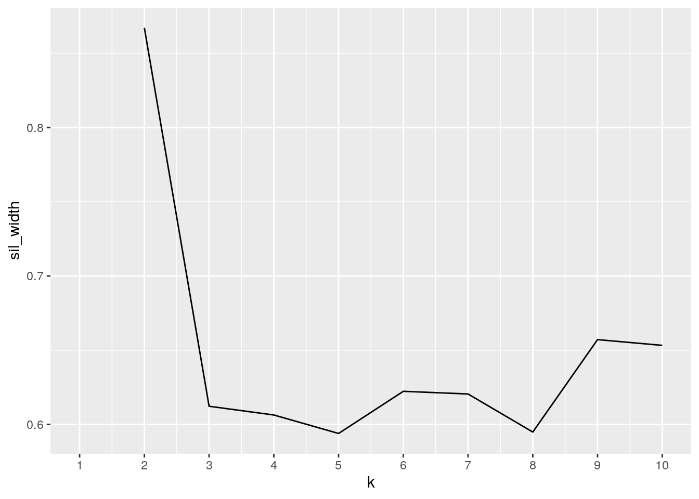
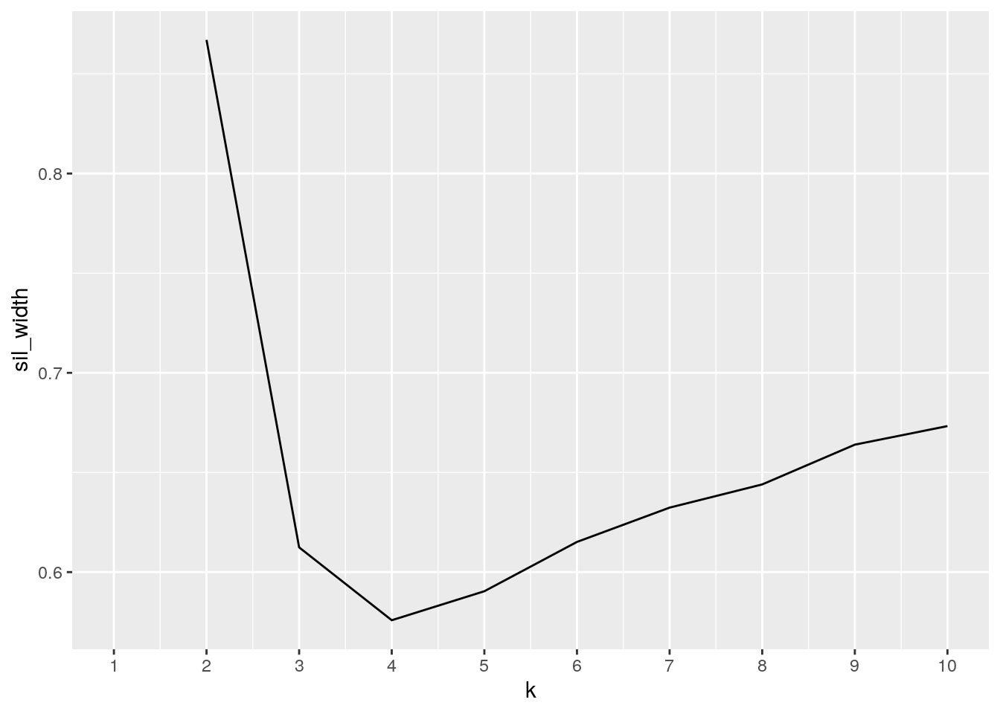
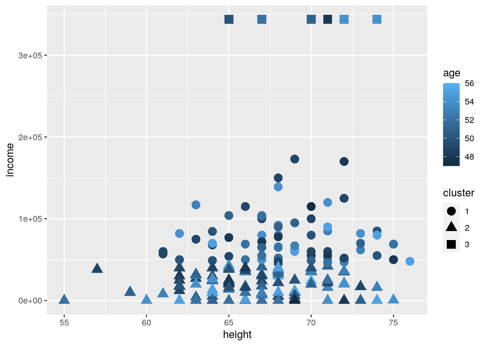

Abbie Duncan (aed2542)
#Introduction
For this project I used a dataset called happy and another dataset called heights. I found this data from the built in data from R studio. The first dataset includes responses from the general social survey from 1972-2006 for Americans. The happy data set includes a wide range of variables compared to general happiness. The data compares happiness level to age, degree, financial status, health, marital status, and sex. The second data set, heights contains 2012 heights, incomes, weight, sex, age, marital status, education, and Armed Forces qualification. I chose these two data sets because I am tall, so I thought it was really interesting to look at that data. I thought this could be an interesting comparison because there are many things that can affect someones happiness such as: income, marital status, education level, etc. Furthermore, I think it will be interesting to see if being taller is beneficial. Ultimatley, it will be interesting to look at potential things that affect happiness. I expect to find that happier people are generally healthier. I think that people who are middle aged will be the happiest. I predict that taller people will have a generally higher income. I do not think that taller people will be happier than others.
library(tidyverse)
library(GGally)
happy## id happy year age sex marital degree finrela
## 1 1 not too happy 1972 23 female never married bachelor average
## 2 2 not too happy 1972 70 male married lt high school above average
## 3 3 pretty happy 1972 48 female married high school average
## 4 4 not too happy 1972 27 female married bachelor average
## 5 5 pretty happy 1972 61 female married high school above average
## 6 6 pretty happy 1972 26 male never married high school above average
## 7 7 not too happy 1972 28 male divorced high school above average
## 8 8 not too happy 1972 27 male never married bachelor average
## 9 9 pretty happy 1972 21 female never married high school average
## 10 10 pretty happy 1972 30 female married high school below average
## health wtssall
## 1 good 0.4446
## 2 fair 0.8893
## 3 excellent 0.8893
## 4 good 0.8893
## 5 good 0.8893
## 6 good 0.4446
## 7 excellent 0.4446
## 8 good 0.4446
## 9 excellent 0.4446
## 10 fair 0.8893
## [ reached 'max' / getOption("max.print") -- omitted 51010 rows ]library(modelr)
heights## # A tibble: 7,006 x 8
## income height weight age marital sex education afqt
## <int> <dbl> <int> <int> <fct> <fct> <int> <dbl>
## 1 19000 60 155 53 married female 13 6.84
## 2 35000 70 156 51 married female 10 49.4
## 3 105000 65 195 52 married male 16 99.4
## 4 40000 63 197 54 married female 14 44.0
## 5 75000 66 190 49 married male 14 59.7
## 6 102000 68 200 49 divorced female 18 98.8
## 7 0 74 225 48 married male 16 82.3
## 8 70000 64 160 54 divorced female 12 50.3
## 9 60000 69 162 55 divorced male 12 89.7
## 10 150000 69 194 54 divorced male 13 96.0
## # … with 6,996 more rows#Tidying
My data was already tidy for the most part. During the wrangling portion is when I did most of the rearranging and removed the missing values.In the code below I use pivot_wider to expand my data set. I removed the NA values after I joined the two datasets shown below in the code displayed lower as well.
#Joining
I used left_join in this dataset because I wanted to encompass all of the values from both heights and happy. They had several overlapping categories already so I wanted to see how everything would line up and compare. The NA values showed up in the columns that did match both data sets. The NA values were present in income, height, weight, education, afqt. This was an easy fix though, I removed the NA values. I had a bit of trouble trying to work out how to only use some of this data because together you can see that there are still over 700,000 rows. Further down, using the dplyr functions I was able to use select() to remove some of the unnecessary columns.
happy1 <- full_join(happy, heights)
happy1## id happy year age sex marital degree finrela
## 1 1 not too happy 1972 23 female never married bachelor average
## 2 2 not too happy 1972 70 male married lt high school above average
## 3 3 pretty happy 1972 48 female married high school average
## 4 3 pretty happy 1972 48 female married high school average
## 5 3 pretty happy 1972 48 female married high school average
## 6 3 pretty happy 1972 48 female married high school average
## health wtssall income height weight education afqt
## 1 good 0.4446 NA NA NA NA NA
## 2 fair 0.8893 NA NA NA NA NA
## 3 excellent 0.8893 14625 65 187 12 37.874
## 4 excellent 0.8893 114000 66 210 12 39.973
## 5 excellent 0.8893 5000 63 115 16 74.988
## 6 excellent 0.8893 9250 64 130 12 NA
## [ reached 'max' / getOption("max.print") -- omitted 1159380 rows ]happyf <- happy1 %>% na.omit()
happyf## id happy year age sex marital degree finrela health
## 3 3 pretty happy 1972 48 female married high school average excellent
## 4 3 pretty happy 1972 48 female married high school average excellent
## 5 3 pretty happy 1972 48 female married high school average excellent
## 7 3 pretty happy 1972 48 female married high school average excellent
## 8 3 pretty happy 1972 48 female married high school average excellent
## 10 3 pretty happy 1972 48 female married high school average excellent
## wtssall income height weight education afqt
## 3 0.8893 14625 65 187 12 37.874
## 4 0.8893 114000 66 210 12 39.973
## 5 0.8893 5000 63 115 16 74.988
## 7 0.8893 25000 62 120 14 73.351
## 8 0.8893 41000 64 230 18 55.829
## 10 0.8893 10000 60 126 11 28.073
## [ reached 'max' / getOption("max.print") -- omitted 733974 rows ]#Wrangling
In the code below I the 6 dplyr functions to readjust my data sets and look at specific factors in the data. I used the filter function to compare men and women taller than 70 inches. I arranged the data set by height and descending income. Using select I deleted education, afqt, wtssall, year, degree, weight, and id because the variables didn’t align with want I want to look at. I also created a vector and used a random sample combined with set.seed() to generate a smaller subset of data containing 200 data points. Using mutate I generated a percentile for income and height.I also used group_by and summarize to look at certain factors in the data. I looked at mean height in comparison to happiness, this was interesting because people who reported being very happy were taller than people who were pretty happy and not too happy. I also used this function to find the mean income compared to happiness; the result is that people who reported ‘not too happy’ had a higher income. Lastly, I looked at mean age, for all 3 happiness rankings the mean was the same.
library(dplyr)
happyf## id happy year age sex marital degree finrela health
## 3 3 pretty happy 1972 48 female married high school average excellent
## 4 3 pretty happy 1972 48 female married high school average excellent
## 5 3 pretty happy 1972 48 female married high school average excellent
## 7 3 pretty happy 1972 48 female married high school average excellent
## 8 3 pretty happy 1972 48 female married high school average excellent
## 10 3 pretty happy 1972 48 female married high school average excellent
## wtssall income height weight education afqt
## 3 0.8893 14625 65 187 12 37.874
## 4 0.8893 114000 66 210 12 39.973
## 5 0.8893 5000 63 115 16 74.988
## 7 0.8893 25000 62 120 14 73.351
## 8 0.8893 41000 64 230 18 55.829
## 10 0.8893 10000 60 126 11 28.073
## [ reached 'max' / getOption("max.print") -- omitted 733974 rows ]happyf %>% filter(height >= 70 & happy == "pretty happy" & finrela ==
"average" & health == "fair" & degree == "high school" &
marital == "divorced" & sex == "male")## id happy year age sex marital degree finrela health wtssall
## 1 370 pretty happy 1976 51 male divorced high school average fair 0.4854
## 2 370 pretty happy 1976 51 male divorced high school average fair 0.4854
## 3 370 pretty happy 1976 51 male divorced high school average fair 0.4854
## 4 370 pretty happy 1976 51 male divorced high school average fair 0.4854
## 5 370 pretty happy 1976 51 male divorced high school average fair 0.4854
## 6 370 pretty happy 1976 51 male divorced high school average fair 0.4854
## income height weight education afqt
## 1 2160 70 200 12 19.981
## 2 0 72 240 12 8.261
## 3 0 71 175 12 10.489
## 4 50000 74 250 14 31.469
## 5 46700 73 172 11 21.568
## 6 56000 72 195 12 23.250
## [ reached 'max' / getOption("max.print") -- omitted 300 rows ]happyf %>% filter(height >= 70 & happy == "pretty happy" & finrela ==
"average" & health == "fair" & marital == "divorced" & sex ==
"female")## id happy year age sex marital degree finrela health wtssall
## 1 1151 pretty happy 1972 47 female divorced high school average fair 0.8893
## 2 545 pretty happy 1976 47 female divorced high school average fair 0.4854
## 3 1157 pretty happy 1977 52 female divorced high school average fair 0.4941
## 4 1208 pretty happy 1980 49 female divorced high school average fair 0.5112
## 5 1208 pretty happy 1980 49 female divorced high school average fair 0.5112
## 6 1208 pretty happy 1980 49 female divorced high school average fair 0.5112
## income height weight education afqt
## 1 35000 72 175 12 53.648
## 2 35000 72 175 12 53.648
## 3 0 72 175 12 79.047
## 4 13000 75 160 12 42.884
## 5 22000 70 155 12 44.859
## 6 72000 71 170 14 38.079
## [ reached 'max' / getOption("max.print") -- omitted 55 rows ]happyf %>% arrange(height, year, desc(income))## id happy year age sex marital degree finrela
## 1 1224 pretty happy 1974 50 female divorced high school below average
## 2 301 not too happy 1975 50 female divorced high school far below average
## 3 1607 pretty happy 1975 50 female divorced high school far below average
## 4 52 pretty happy 1976 50 female divorced lt high school average
## 5 50 not too happy 1977 50 female divorced bachelor above average
## 6 510 pretty happy 1977 50 female divorced lt high school far below average
## health wtssall income height weight education afqt
## 1 fair 0.4660 8000 52 175 11 4.679
## 2 poor 0.4660 8000 52 175 11 4.679
## 3 good 0.9320 8000 52 175 11 4.679
## 4 poor 0.9709 8000 52 175 11 4.679
## 5 excellent 0.4941 8000 52 175 11 4.679
## 6 fair 0.4941 8000 52 175 11 4.679
## [ reached 'max' / getOption("max.print") -- omitted 733974 rows ]happy2 <- happyf %>% select(-education, -afqt, -wtssall, -year,
-degree, -weight, -id)
happy2## happy age sex marital finrela health income height
## 3 pretty happy 48 female married average excellent 14625 65
## 4 pretty happy 48 female married average excellent 114000 66
## 5 pretty happy 48 female married average excellent 5000 63
## 7 pretty happy 48 female married average excellent 25000 62
## 8 pretty happy 48 female married average excellent 41000 64
## 10 pretty happy 48 female married average excellent 10000 60
## 11 pretty happy 48 female married average excellent 31000 64
## 12 pretty happy 48 female married average excellent 18000 68
## 13 pretty happy 48 female married average excellent 0 63
## 15 pretty happy 48 female married average excellent 45000 59
## 16 pretty happy 48 female married average excellent 58000 65
## 17 pretty happy 48 female married average excellent 75000 65
## [ reached 'max' / getOption("max.print") -- omitted 733968 rows ]set.seed(919)
happy3 <- happy2[sample(nrow(happy2), 200), ]
happy3## happy age sex marital finrela health income
## 185348 pretty happy 52 male married average good 52000
## 1144173 very happy 49 male married below average fair 125000
## 1143396 pretty happy 48 female married below average fair 36000
## 768284 very happy 51 male married above average good 41000
## 15268 very happy 49 male married above average fair 35000
## 219711 very happy 52 male married average fair 14000
## 178423 pretty happy 53 male married average good 85000
## 862235 very happy 53 male divorced below average excellent 32000
## 425676 not too happy 54 male married far above average poor 343830
## 119106 very happy 52 female married above average excellent 35000
## 60402 not too happy 52 male married average fair 22000
## 492829 not too happy 49 female married below average excellent 68000
## height
## 185348 72
## 1144173 72
## 1143396 70
## 768284 67
## 15268 72
## 219711 65
## 178423 71
## 862235 67
## 425676 72
## 119106 66
## 60402 65
## 492829 64
## [ reached 'max' / getOption("max.print") -- omitted 188 rows ]happyfixed <- na.omit(happy3)
happyfixed## happy age sex marital finrela health income
## 185348 pretty happy 52 male married average good 52000
## 1144173 very happy 49 male married below average fair 125000
## 1143396 pretty happy 48 female married below average fair 36000
## 768284 very happy 51 male married above average good 41000
## 15268 very happy 49 male married above average fair 35000
## 219711 very happy 52 male married average fair 14000
## 178423 pretty happy 53 male married average good 85000
## 862235 very happy 53 male divorced below average excellent 32000
## 425676 not too happy 54 male married far above average poor 343830
## 119106 very happy 52 female married above average excellent 35000
## 60402 not too happy 52 male married average fair 22000
## 492829 not too happy 49 female married below average excellent 68000
## height
## 185348 72
## 1144173 72
## 1143396 70
## 768284 67
## 15268 72
## 219711 65
## 178423 71
## 862235 67
## 425676 72
## 119106 66
## 60402 65
## 492829 64
## [ reached 'max' / getOption("max.print") -- omitted 188 rows ]happyfixed %>% mutate(income_perecentile = ntile(income, 100))## happy age sex marital finrela health income height
## 1 pretty happy 52 male married average good 52000 72
## 2 very happy 49 male married below average fair 125000 72
## 3 pretty happy 48 female married below average fair 36000 70
## 4 very happy 51 male married above average good 41000 67
## 5 very happy 49 male married above average fair 35000 72
## 6 very happy 52 male married average fair 14000 65
## 7 pretty happy 53 male married average good 85000 71
## 8 very happy 53 male divorced below average excellent 32000 67
## 9 not too happy 54 male married far above average poor 343830 72
## 10 very happy 52 female married above average excellent 35000 66
## 11 not too happy 52 male married average fair 22000 65
## income_perecentile
## 1 65
## 2 94
## 3 48
## 4 57
## 5 46
## 6 27
## 7 86
## 8 45
## 9 96
## 10 47
## 11 35
## [ reached 'max' / getOption("max.print") -- omitted 189 rows ]happyfixed %>% mutate(height_perecentile = ntile(height, 100))## happy age sex marital finrela health income height
## 1 pretty happy 52 male married average good 52000 72
## 2 very happy 49 male married below average fair 125000 72
## 3 pretty happy 48 female married below average fair 36000 70
## 4 very happy 51 male married above average good 41000 67
## 5 very happy 49 male married above average fair 35000 72
## 6 very happy 52 male married average fair 14000 65
## 7 pretty happy 53 male married average good 85000 71
## 8 very happy 53 male divorced below average excellent 32000 67
## 9 not too happy 54 male married far above average poor 343830 72
## 10 very happy 52 female married above average excellent 35000 66
## 11 not too happy 52 male married average fair 22000 65
## height_perecentile
## 1 85
## 2 86
## 3 71
## 4 41
## 5 86
## 6 26
## 7 79
## 8 41
## 9 87
## 10 34
## 11 27
## [ reached 'max' / getOption("max.print") -- omitted 189 rows ]happyfixed %>% group_by(happy) %>% summarize(mean_height = mean(height,
na.rm = T), sd_height = sd(height, na.rm = T), max_height = max(height,
na.rm = T), min_height = min(height, na.rm = T), quantile_height = quantile(height,
na.rm = T))## # A tibble: 15 x 6
## # Groups: happy [3]
## happy mean_height sd_height max_height min_height quantile_height
## <fct> <dbl> <dbl> <dbl> <dbl> <dbl>
## 1 not too happy 65.8 3.96 72 55 55
## 2 not too happy 65.8 3.96 72 55 64
## 3 not too happy 65.8 3.96 72 55 65
## 4 not too happy 65.8 3.96 72 55 68.5
## 5 not too happy 65.8 3.96 72 55 72
## 6 pretty happy 67.4 3.77 76 57 57
## 7 pretty happy 67.4 3.77 76 57 65
## 8 pretty happy 67.4 3.77 76 57 68
## 9 pretty happy 67.4 3.77 76 57 70
## 10 pretty happy 67.4 3.77 76 57 76
## 11 very happy 67.4 3.90 75 57 57
## 12 very happy 67.4 3.90 75 57 64.5
## 13 very happy 67.4 3.90 75 57 67
## 14 very happy 67.4 3.90 75 57 70
## 15 very happy 67.4 3.90 75 57 75happyfixed %>% group_by(happy) %>% summarize(mean_income = mean(income,
na.rm = T), sd_income = sd(income, na.rm = T))## # A tibble: 3 x 3
## happy mean_income sd_income
## <fct> <dbl> <dbl>
## 1 not too happy 71703. 107483.
## 2 pretty happy 50650. 61387.
## 3 very happy 55162. 76076.happyfixed %>% group_by(happy) %>% summarize(mean_age = mean(age,
na.rm = T), sd_age = sd(age, na.rm = T))## # A tibble: 3 x 3
## happy mean_age sd_age
## <fct> <dbl> <dbl>
## 1 not too happy 51.7 2.27
## 2 pretty happy 51.3 2.34
## 3 very happy 51.2 2.20happypiv <- happyfixed %>% pivot_wider(1:8)
happypiv## # A tibble: 200 x 8
## happy age sex marital finrela health income height
## <fct> <dbl> <fct> <fct> <fct> <fct> <int> <dbl>
## 1 pretty happy 52 male married average good 52000 72
## 2 very happy 49 male married below average fair 125000 72
## 3 pretty happy 48 female married below average fair 36000 70
## 4 very happy 51 male married above average good 41000 67
## 5 very happy 49 male married above average fair 35000 72
## 6 very happy 52 male married average fair 14000 65
## 7 pretty happy 53 male married average good 85000 71
## 8 very happy 53 male divorced below average excellent 32000 67
## 9 not too happy 54 male married far above average poor 343830 72
## 10 very happy 52 female married above average excellent 35000 66
## # … with 190 more rows#Visualizing
The correlation test shows that there is a medium to weak correlation between the height and income variables in the dataset. Not suprisingly, age and height have a strong correlation. Height and income appear to have a weak or medium correlation. The heatmap doesn’t show any many strong correlations between the datasets. I struggled a bit here to get it to code my adjusted dataset and tried it with the originally joined one, so that may have potentially skewed my result. Education had a moderate correlation with the Armed Forces Qualification test. Education also seemed to have a weak to moderate correlation with income.The first ggplot in pink compares sex to happiness. In general it seems that men reported to be ‘very happy’ more often than women did; both sexes reported feeling ‘not too happy’ about the same amount. The next ggplot in gray just shows a general representation of happiness reports from the data. Most people reported being pretty happy, followed by very happy, and lastly not too happy. The final ggplot in purple shows the mean value reported from comparing happiness to height. The mean values are very close but people in the tall category show slightly higher happiness levels.
happyfixed %>% summarize(cor(height, income, use = "pair"))## cor(height, income, use = "pair")
## 1 0.2304438corhappy <- happyfixed %>% select_if(is.numeric) %>% cor(use = "pair")
corhappy## age income height
## age 1.00000000 -0.06033197 0.09884192
## income -0.06033197 1.00000000 0.23044379
## height 0.09884192 0.23044379 1.00000000happyf %>% select_if(is.numeric) %>% cor %>% as.data.frame %>%
rownames_to_column %>% pivot_longer(-1) %>% ggplot(aes(rowname,
name, fill = value)) + geom_tile() + geom_text(aes(label = round(value,
2))) + xlab("") + ylab("") + coord_fixed() + scale_fill_gradient2(low = "pink",
mid = "blue", high = "purple")
ggplot(happyfixed, aes(x = sex, fill = happy)) + geom_bar(position = "fill") +
scale_fill_brewer(palette = "RdPu")
ggplot(happyfixed, aes(h)) + geom_bar(aes(happy)) + coord_flip() +
theme(legend.position = "none")
g1 <- ggplot(happyfixed, aes(happy, height)) + geom_point()
g1 + stat_summary(fun.data = "mean_cl_boot", colour = "purple",
size = 2) #Clustering I tried to create a cluster of my 3 numerical variables, definitely struggled with this one. It looks liked based on the data that 9 seems to be the best fit for K which also seems off to me. I think I coded this incorrectly. Height and income may potentially have a correlation between them.
library(cluster)
pamhap <- happyfixed %>% select(income, height, age)
pamhap## income height age
## 185348 52000 72 52
## 1144173 125000 72 49
## 1143396 36000 70 48
## 768284 41000 67 51
## 15268 35000 72 49
## 219711 14000 65 52
## 178423 85000 71 53
## 862235 32000 67 53
## 425676 343830 72 54
## 119106 35000 66 52
## 60402 22000 65 52
## 492829 68000 64 49
## 345261 100000 70 49
## 405794 40000 65 51
## 415576 23000 65 52
## 309496 38000 57 49
## 502425 16000 71 53
## 892814 30000 64 50
## 743577 50000 72 48
## 851298 92000 68 53
## 774157 25000 65 48
## 626043 7000 67 52
## 286868 55000 70 48
## 1076478 72000 67 50
## 427120 66000 68 55
## 188560 80000 68 54
## 346882 0 64 55
## 981136 85000 74 50
## 824119 0 66 52
## 600445 0 63 49
## 557509 90000 68 51
## 735216 0 67 48
## 1048839 49000 70 51
## [ reached 'max' / getOption("max.print") -- omitted 167 rows ]set.seed(999)
kmean1 <- pamhap %>% kmeans(3)
kmean1## K-means clustering with 3 clusters of sizes 73, 118, 9
##
## Cluster means:
## income height age
## 1 77910.96 68.53425 51.04110
## 2 17656.63 66.31356 51.42373
## 3 343830.00 69.55556 51.22222
##
## Clustering vector:
## 185348 1144173 1143396 768284 15268 219711 178423 862235 425676 119106
## 1 1 2 2 2 2 1 2 3 2
## 60402 492829 345261 405794 415576 309496 502425 892814 743577 851298
## 2 1 1 2 2 2 2 2 1 1
## 774157 626043 286868 1076478 427120 188560 346882 981136 824119 600445
## 2 2 1 1 1 1 2 1 2 2
## 557509 735216 1048839 931363 316275 485340 121269 120261 508141 56117
## 1 2 1 1 1 1 2 2 2 1
## 140710 507896 841267 675163 823905 186042 3743 283963 809042 149055
## 1 2 2 1 1 2 2 1 1 2
## 888122 1118842 172267 43267 128037 196756 473134 616194 899786 224532
## 1 1 2 2 1 1 2 2 2 3
## 29043 1081458 126697 1100399 873898 611879 3919 168859 1136395 796957
## 1 2 1 2 2 1 1 2 1 2
## 300428 570755 5924 340645 191445 717327 110093 613838 226418 693774
## 1 1 2 2 1 1 2 2 2 1
## 593961 62219 100186 825614 386404 843860 860359 197337 970214 874160
## 1 2 2 2 2 2 2 3 2 2
## 145672 773628 507264 16061 52799 727819 860085 331879 1055356 127607
## 1 2 1 2 2 2 2 3 1 2
## [ reached getOption("max.print") -- omitted 100 entries ]
##
## Within cluster sum of squares by cluster:
## [1] 5.784867e+10 2.763362e+10 1.017778e+02
## (between_SS / total_SS = 91.8 %)
##
## Available components:
##
## [1] "cluster" "centers" "totss" "withinss" "tot.withinss"
## [6] "betweenss" "size" "iter" "ifault"kmeanpam <- pamhap %>% mutate(cluster = as.factor(kmean1$cluster))
kmeanpam %>% ggplot(aes(height, income, age, color = cluster)) +
geom_point()
library(cluster)
sil_width <- vector()
for (i in 2:10) {
kms <- kmeans(pamhap, centers = i)
sil <- silhouette(kms$cluster, dist(pamhap))
sil_width[i] <- mean(sil[, 3])
}
ggplot() + geom_line(aes(x = 1:10, y = sil_width)) + scale_x_continuous(name = "k",
breaks = 1:10)
library(cluster)
pam1 <- pamhap %>% pam(k = 3)
pam1## Medoids:
## ID income height age
## 145672 91 69000 66 52
## 666380 163 17000 66 54
## 713848 135 343830 70 51
## Clustering vector:
## 185348 1144173 1143396 768284 15268 219711 178423 862235 425676 119106
## 1 1 2 2 2 2 1 2 3 2
## 60402 492829 345261 405794 415576 309496 502425 892814 743577 851298
## 2 1 1 2 2 2 2 2 1 1
## 774157 626043 286868 1076478 427120 188560 346882 981136 824119 600445
## 2 2 1 1 1 1 2 1 2 2
## 557509 735216 1048839 931363 316275 485340 121269 120261 508141 56117
## 1 2 1 1 1 1 2 2 2 1
## 140710 507896 841267 675163 823905 186042 3743 283963 809042 149055
## 1 2 2 1 1 2 2 1 1 2
## 888122 1118842 172267 43267 128037 196756 473134 616194 899786 224532
## 1 1 2 2 1 1 2 2 2 3
## 29043 1081458 126697 1100399 873898 611879 3919 168859 1136395 796957
## 1 2 1 2 2 1 1 2 1 2
## 300428 570755 5924 340645 191445 717327 110093 613838 226418 693774
## 1 1 2 2 1 1 2 2 2 1
## 593961 62219 100186 825614 386404 843860 860359 197337 970214 874160
## 1 2 2 2 2 2 2 3 2 2
## 145672 773628 507264 16061 52799 727819 860085 331879 1055356 127607
## 1 2 1 2 2 2 2 3 1 2
## [ reached getOption("max.print") -- omitted 100 entries ]
## Objective function:
## build swap
## 18515.70 15423.34
##
## Available components:
## [1] "medoids" "id.med" "clustering" "objective" "isolation"
## [6] "clusinfo" "silinfo" "diss" "call" "data"pamc <- pamhap %>% mutate(cluster = as.factor(pam1$clustering))
pamc %>% ggplot(aes(height, income, age, color = cluster)) +
geom_point()pamc %>% group_by(cluster) %>% summarize_if(is.numeric, mean,
na.rm = T)## # A tibble: 3 x 4
## cluster income height age
## <fct> <dbl> <dbl> <dbl>
## 1 1 76661. 68.6 51.1
## 2 2 16911. 66.2 51.4
## 3 3 343830 69.6 51.2happyfixed[pam1$id.med, ]## happy age sex marital finrela health income height
## 145672 pretty happy 52 female married below average poor 69000 66
## 666380 pretty happy 54 female married average good 17000 66
## 713848 pretty happy 51 male married average excellent 343830 70pam1$silinfo$avg.width## [1] 0.6124133pamdat <- happyfixed %>% select(height, income, age)
sil_width <- vector()
for (i in 2:10) {
pam_fit <- pam(pamdat, k = i)
sil_width[i] <- pam_fit$silinfo$avg.width
}
ggplot() + geom_line(aes(x = 1:10, y = sil_width)) + scale_x_continuous(name = "k",
breaks = 1:10)
# try this
pamc %>% group_by(cluster) %>% summarize_if(is.numeric, mean,
na.rm = T)## # A tibble: 3 x 4
## cluster income height age
## <fct> <dbl> <dbl> <dbl>
## 1 1 76661. 68.6 51.1
## 2 2 16911. 66.2 51.4
## 3 3 343830 69.6 51.2pamc %>% mutate(species = happyfixed$happy) %>% ggplot(aes(height,
income, color = age, shape = cluster)) + geom_point(size = 4)
knitr::opts_chunk$set(echo = TRUE, eval = TRUE, fig.align = "center",
warning = F, message = F, tidy = TRUE, tidy.opts = list(width.cutoff = 60),
R.options = list(max.print = 100))